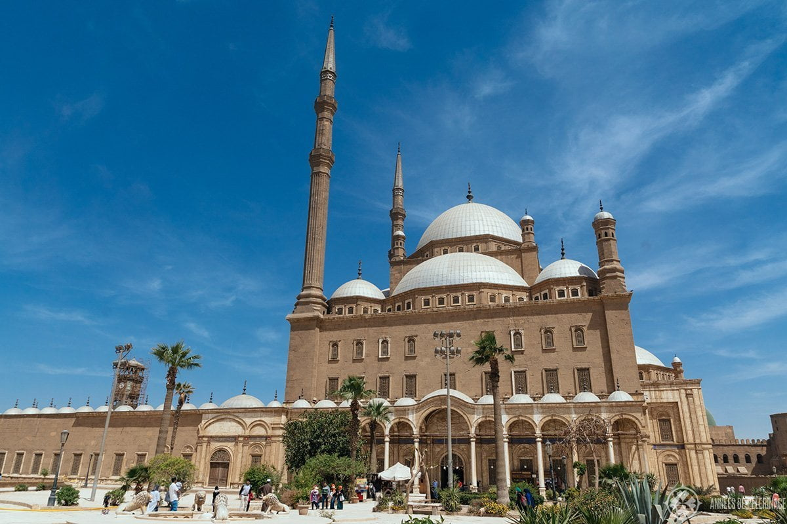
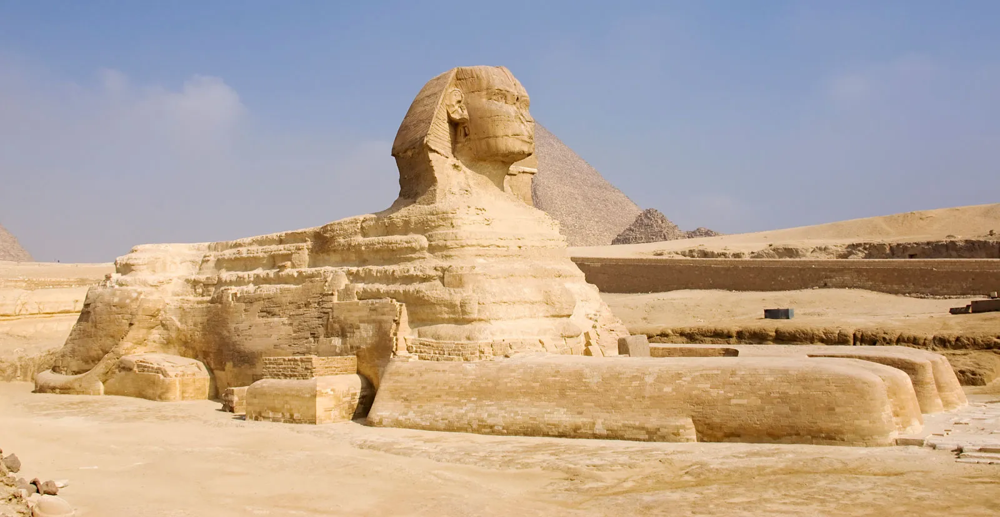
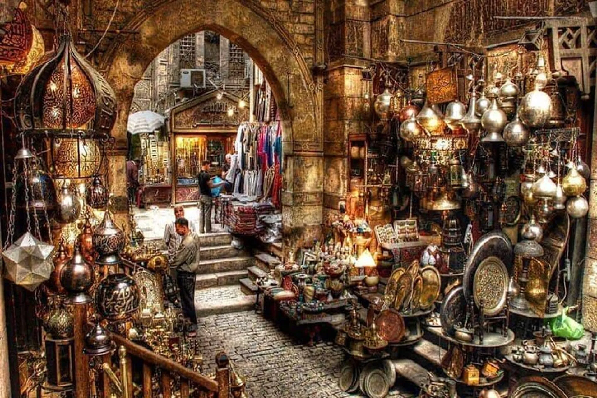
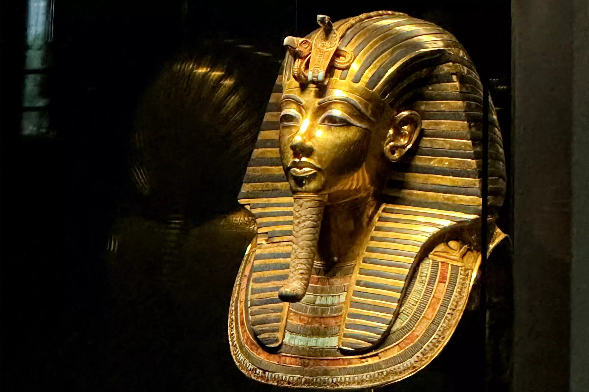

Islamic Arts
As a cultural center of the Arab world, Cairo is famed for its Islamic art and architecture, with over 4,000 mosques dotting its skyline.
The ancient city on the Nile, where Pharaonic legacy meets modern Arab charm.
Cairo was officially founded in 969 AD by the Fatimid dynasty, but it stands next to the even older city of Fustat and the ruins of ancient Memphis, dating back to 3000 BC. During the Ayyubid dynasty in the 12th century, Saladin built the Citadel to defend against the Crusaders, and by the Middle Ages, it had become a global center of Islamic learning. Following modernization reforms in the 19th century and Nasser's revolution in the 20th, Cairo became a hub for the Pan-Arab movement, and remains a major political and cultural center of the Middle East today.

As a cultural center of the Arab world, Cairo is famed for its Islamic art and architecture, with over 4,000 mosques dotting its skyline.
Café culture is vibrant, with locals loving to play backgammon in traditional coffeehouses. Egyptians are known for their hospitality and humor.
The city's film industry is renowned throughout the Middle East, and the Cairo International Film Festival enjoys global prestige.

An absolute must-see, including the Great Pyramids of Khufu, Khafre, and Menkaure, the Great Sphinx, and the Solar Boat Museum.

A bustling medieval-era bazaar in the heart of Islamic Cairo. It's the perfect place to shop for spices, perfumes, and souvenirs.

Home to an immense collection of ancient artifacts, including the world-famous golden mask of Tutankhamun and the Royal Mummies.